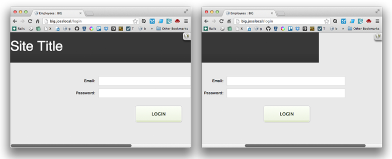

This post is part of a series
You use several command line tools throughout the blog tutorial, and you'll copy/pasted several commands into the terminal. Here's a bit more explanation on each command.
When you install the Rails gem, you also...
read moreHey? That sounds like a bad deal? What's this about?
I've just finished ReInteractive's 15min Rails Blog. It's awesome. If you're wanting to learn rails (as I am) then it's a great start. If you're in Sydney, go to their even more awesome InstallFest
read moreI just came across this in my CakePHP app. Posting my fix here, to aid any of you error code googlers. Turns out in my case the issue was just that one of my fixtures had an extra field in the $records array, which didn’t belong to that model / database...
read moreI just came accross this error in one of my CakePHP apps. I’m going to keep track of my debugging as I go here, for my own reference, and to improve the luck of any error-code-googlers out there.
In my CakePHP 2.3 app, every request, I’m getting the...
read moreJust now I was trying to divide two percentages in SASS (I’m relatively new to SASS). Basically, I had 7 columns for days of the week, and I wanted something like:
width: (100/7)%; // did NOT work
After a bit of searching, it turns out SASS already...
read moreSo, at Step 5 of the tutorial, when I run:
rvm install 1.9.3
I get this output at the terminal:
The “all good” part
Searching for binary rubies, this might take some time.
No binary rubies available for: osx/10.8/x86_64/ruby-1.9.3-p429.
Continuing...I’ve been using ColorZilla to generate my background gradients, and I’ve been using the SASS / Compass version of the generated code, which looks something like this:
// needs latest Compass, add '@import "compass"' to your scss
background-color:...Sometimes when your window is narrow, you’ll find that your fixed-width header or content appears to get truncated when you scroll to the right.

Add a CSS rule to ensure that your body element is at least as wide as the...
read moreWelcome to my Blog!
Hopefully I’ll get round to updating it with programming-related stuff that I think I’ll find useful in future, or that others will find useful.
read morePrev | Page 6 of 6 |